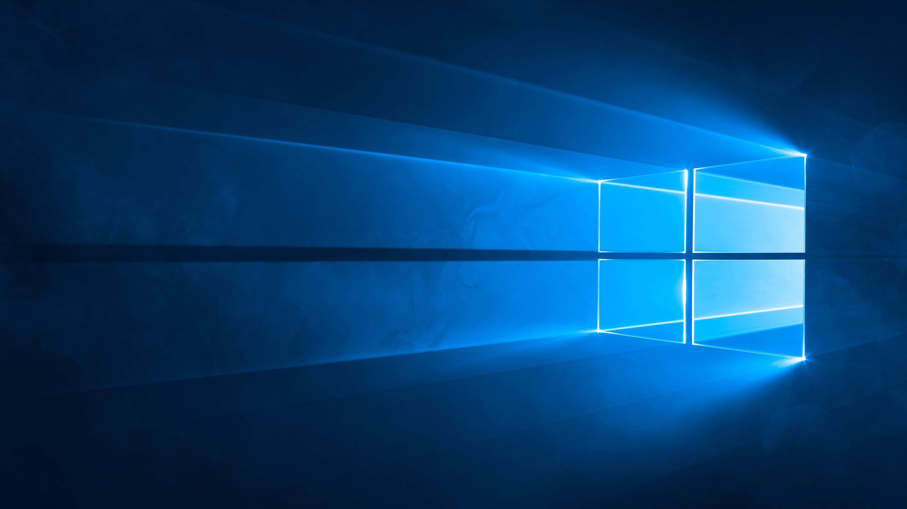
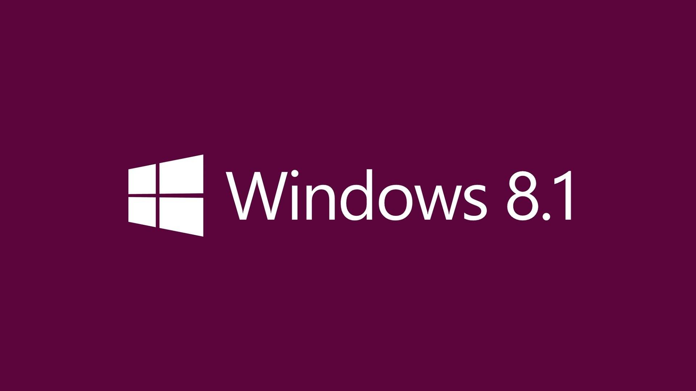
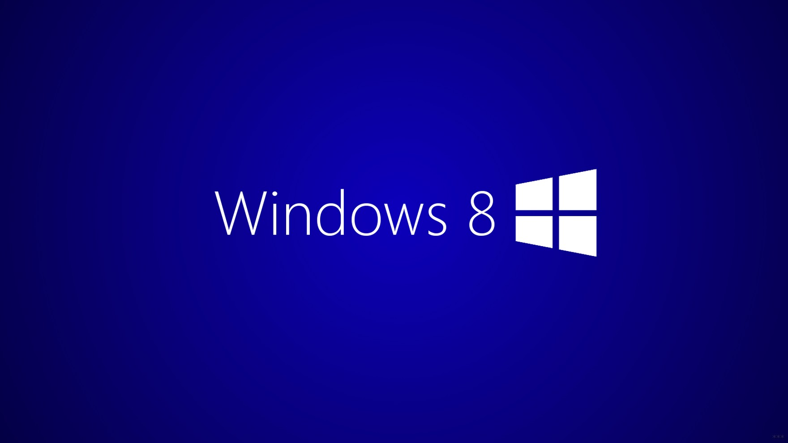
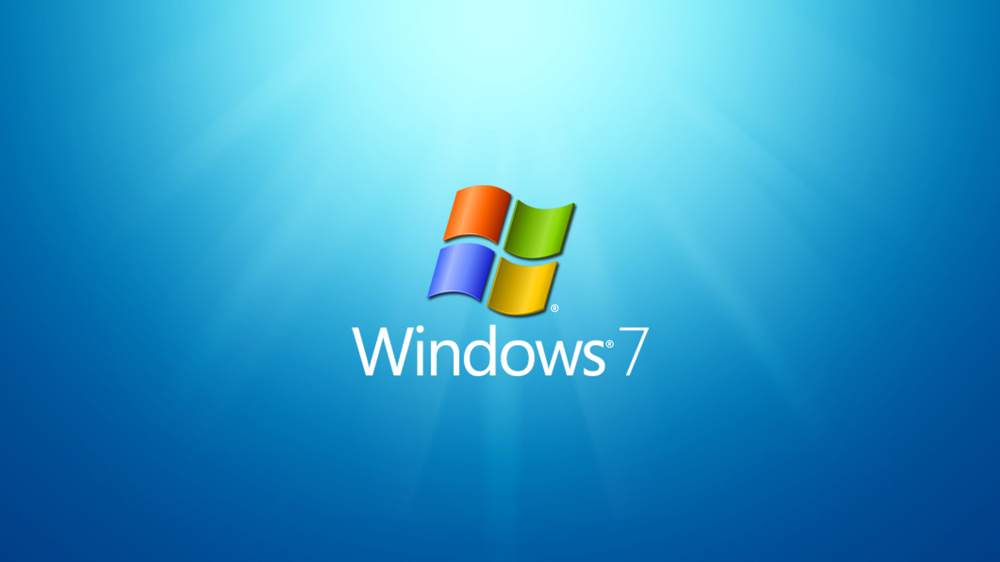

Современные операционные системы
• Семейство Windows
• Семейство Linux
• Семейство macOS
Windows 11
Год выпуска: 2021
Подробнее
Windows 10

Год выпуска: 2015
Подробнее
Windows 8.1

Год выпуска: 2013
Расширенная поддержка будет прекращена 10 января 2023 года.
Подробнее
Windows 8

Год выпуска: 2012
Расширенная поддержка была прекращена 12 января 2016 года.
Подробнее
Windows 7

Год выпуска: 2009
Расширенная поддержка была прекращена 14 января 2020 года.
Подробнее
Оставить отзыв
Обо мне